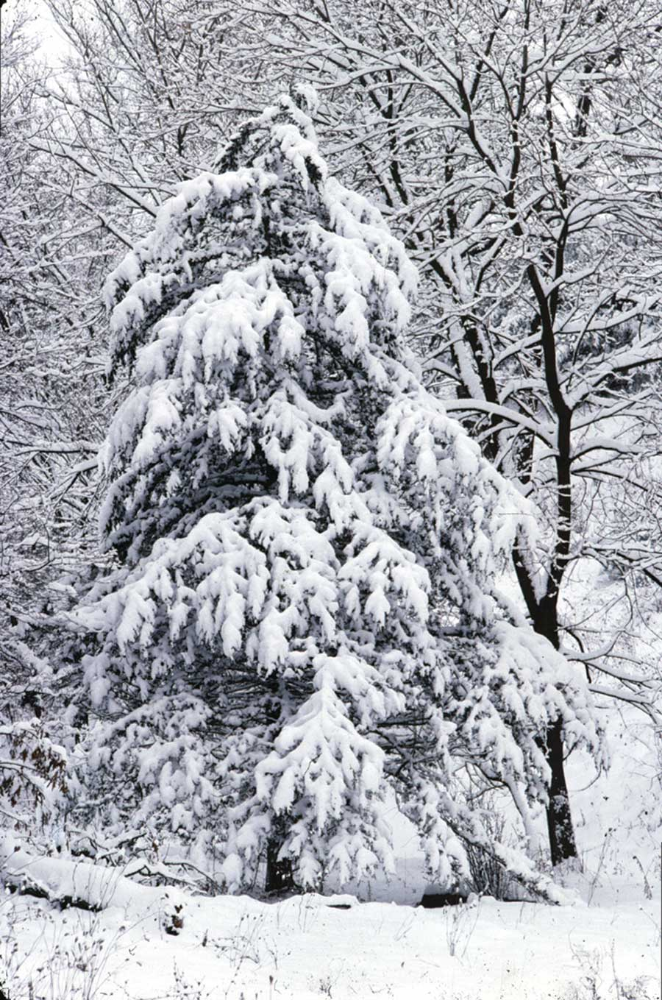

This past Christmas, we were really busy and Christmas was coming up quickly. We needed to get a tree, but they were $38, so we thought we might find a candidate on our property.
We had planted various pine trees, and now had a fresh pine forest. We went to look for a tree, but hated the idea of cutting down a thriving young pine.
My wife and daughter had seen a scrub cedar (eastern red cedar) near the road and took me to look at it. Against the horizon it seemed sort of small, but it had a good Christmas-tree shape. I measured it and found it stood a surprising 6 feet tall.
I cut it with a chain saw, and carefully (with gloves, as the needles on a cedar tree are sort of prickly) carried it into our house, placed it into the tree stand and watered it.
And did it drink and drink! I noticed the color of the cedar was green with a pronounced red tinge to it at first. After several days of watering, it seemed to become greener. My wife loved the aroma that permeated the house.
We strung lights gently and hung all of our Christmas ornaments with care. Soon the cedar was surrounded by Christmas gifts. It was a wonderful free Christmas tree. I felt a bit sad that even a cedar tree, which is considered a pest by many local farmers, had to give up its life for Christmas, but this one had to go sooner or later anyway because it was directly under the power lines. And, we couldn’t argue with the price.
|
 DAVID CAVAGNARO An eastern red cedar can become a lovely Christmas tree. |
|
|